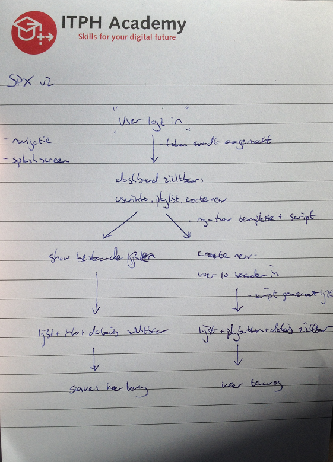
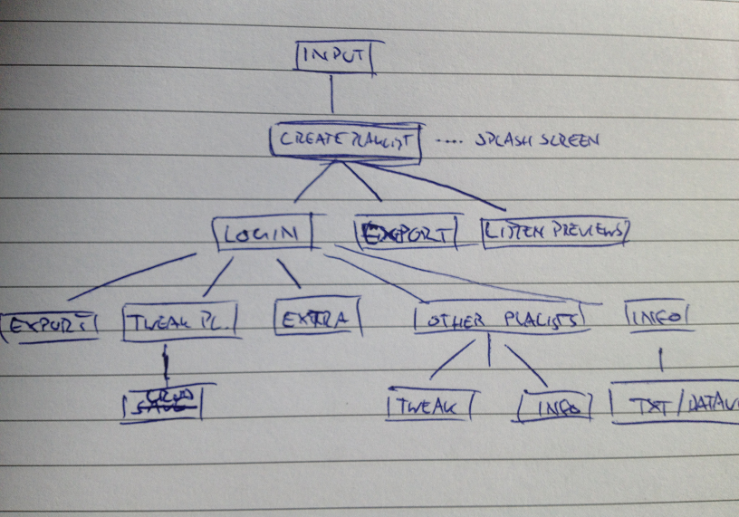

<!-- About and case study view -->
<div class="view">
	<div class="container">
		<div class="about">
		</div>
		<div class="casestudy">
			<h3>Case study</h3>
			<p>For my Young Capital traineeship I made this single page application. This app is part of the learning process which has taken the first two months of the traineeship.</p>
			<h4>First things first</h4>
			<p>In advance I set myself some goals for the app :</p>
			<ul>
				<li>The project should be completed in 1,5 month including some basic documentation</li>
				<li>It should be fully representative of my skills to give a potential opdrachtgever the right insight</li>
				<li>It has te be a Single Page Application (SPA)</li>
				<li>It uses at least 1 datavis library (preferibaly D3)</li>
				<li>It should be able to get and set API calls</li>
			</ul>
			<p>After some hard thinking I decided to settle on an old idea. Being a big music fan and number cruncher I decided to combine the two. This resulted in building a application visualising data pulled out of the <a href="https://developer.spotify.com/web-api/">Spotify Web API.</a></p>
			<p>This was easier said than done. I would like to take you along in two months of joy, frustration and ultimately a mighty working app that you can find here .</p>
			
			
			<h4>How building my first application went</h4>
			<p>Given the duration of the training , I decided to build a relatively small app. This was about one month's time. Spotify offers since the beginning of this year the possibility to collect so-called audio features from their database. These are pieces of metadata that a number specify the pace , level of energy and positivity contains a number, among other data.</p>
			<p>The idea was to be able to read both playlists and new to create . The latter turned soon out not be possible. The Spotify API simply does not offer the ability to select tracks using the audio features from the database. Hereon I decided to make the app completely around reading and visualizing data from the API.</p>
			<p>As mentioned, an important element within the app displaying data visualizations on the basis of the data found. The starting point was to create an app that these dates can read in addition to the regular data in playlists.</p>
			<p>I started making sketches in the first week. Here I determined the structure and components ( controllers and factories ).</p>
			<p>I then built a back-end with Node and Express. This took me a long time since I do not yet have all the knowledge when I started. During the construction I had do a lot of reading up and applying the new knowledge it in the app. This meant that I was losing a lot of time rewriting modules and code blocks . A big breakthrough here was able to retrieve the data successfully and display it in the console :)</p>
			<p>The next challenge was in the correct routing of the data and display different views . Angular uses a dependency called ngRoute . However, this is quite limited and can be redeemed for more flexible ui-router router. Because the user first must be able to authorize a valid ID a call to the Spotify authentication server has to be made in order to have te user being redirected (after accepting it) to the dashboard. This server uses 0Auth for authentication was quite daunting to learn on first hand.</p>
			<p>When the back-end once it was available, I immersed myself in <a href="https://angularjs.org/">Angular</a>. This I underestimated; My suspicion was initially that I had sufficient knowledge of Angular and quickly structured data could get different views. In about 1.5 weeks time I have all the required data (with some not too nice characters) can pick out the API and can display in the app.</p>
			<p>The Friday before the presentation fate seemed to strike as the routing does not seem to work more in the front-end. Together with another student, we had to take an hour of strolling through the code. The problem turned out to be in calling the various dependencies in html. This happened both in the home screen (index.html ) and via the dashboard.</p>
			<p>The last 3 days were mainly dominated by the front end. Here I mostly kept the color scheme of Spotify to drop the app into line with this service. However, this can be changed of course . The app now looks a bit basic, for example in terms of UI , there is of course still much to gain.</p>
			<p>All in all I am finally very happy about my first experience with Angular , Node and Express. Moreover, this has been a very educational experience in how a small application can be built.</p>
			
			<h4>To sum it all up</h4>
			<p>Some major learning points I took from doing this project:</p>
			<ul>
				<li>Always make a flow of how you envision  the user navigation the application and how data gets passed around. I had done this on paper, but not detailed enough which led to some head-scratching moments later on.</li>
				<li>The directory structure had to be changed several times to have code organized. Luckily this was during the start of the project.</li>
				<li>Using <a href="https://www.npmjs.com/">NPM</a> to include necessary packages beforehand is a great idea; this enabled me to build working code more quickly</li>
				<li>When using an remote API: Always read the API documentation so you can start more effortlessly in setting up connections to endpoints. This proved to be a time-consuming bit</li>
				<li>One of the best advies I got: Break structure up in small tasks instead of 1 big (daunting) task. I made it a habit to keep on building my projects from the start to the need to share everything. However, it is much more practical to think in units and knots then together . It also offers the ability to test on a small scale new parts and debug before they get into the bigger picture.</li>
			</ul>
			<h4>What’s next?</h4>
			<ul>
				<li>Finding a nice opportunity to widen my new-found skills on project base.</li>
				<li>Building another application. I’m currently thinking of doing this in React.js backed with Node, Express and Mongo. <a href="https://hashnode.com/post/react-tutorial-using-mern-stack-ciiyus9m700qqge53mer0isxz">This article</a> definitely sparked my interest in doing so.</li>
				<li>Refactor the application. Some last minute added / or edited code deserves some much need clean-up. Also, putting everyhting in controllers and factories is something I’d like to see.</li>
			</ul>
			<p>Erik van Deursen, August 2016</p>
		</div>
	</div>
</div>
